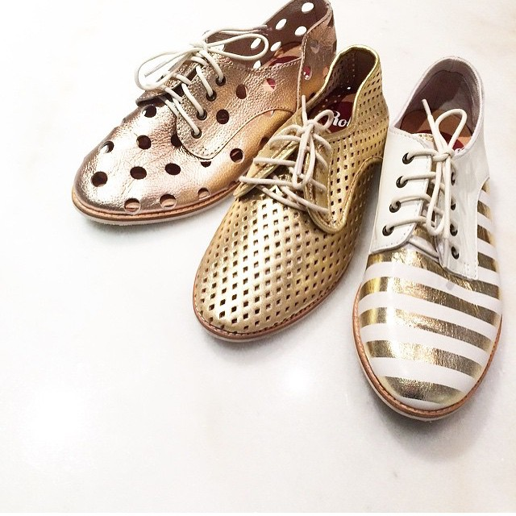
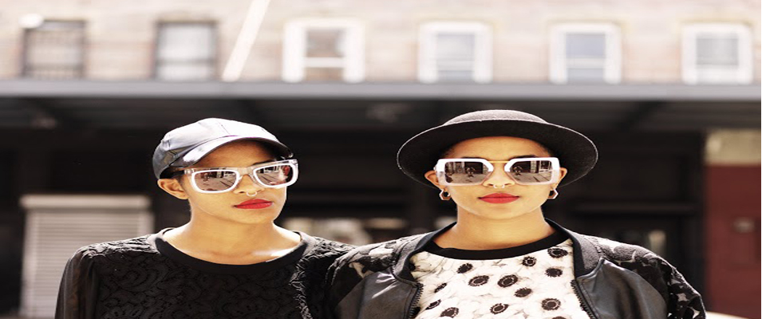
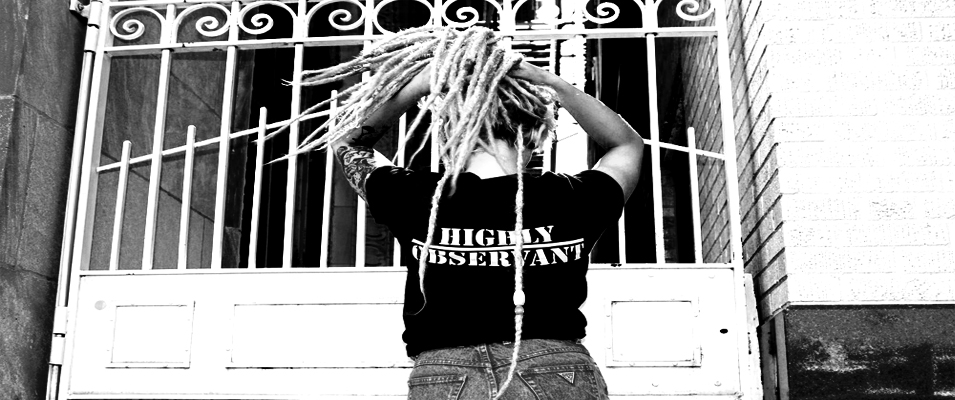
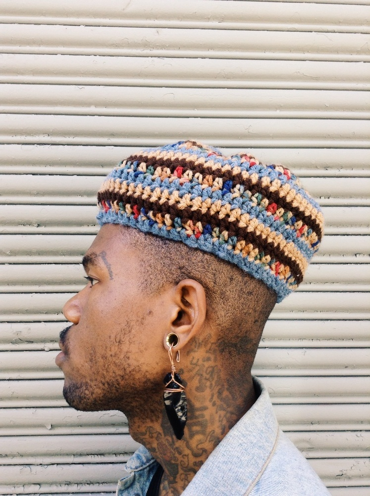

Portland’s Wildfang isn’t simply just a brand, but a growing movement for women who do not fit the mold of what society may deem them. For a long time fashion has fallen short in regards to the outdated gender binary. Tomboys were either subjected to having to shop in the men’s section, and wear oversized, ill fitting clothing not made for their bodies, or wear clothes that didn’t speak to their identity or fashion preference, Then comes Wildfang...[read more]
IN THIS ISSUE:
When it comes to creativity, for Rob Hill and Slim Jeff it’s a family affair. The cousins, based out of Los Angeles, combined their love for art, music and fashion and launched NDSLA, which to them translates to this idea of independent stars embarking on a journey of growth. Both of those concepts reign true, for they have experienced...[read more]
 If you take a walk in designer, Jean Vincent Lebon’s shoes, you will have stepped foot into greatness. There’s a reason they say that life's a journey, and all those steps led him to create Rollie, a vibrant, lightweight edgy shoe brand based in Melbourne, Australia. With a rainbow of colors, and a kaleidoscope of styles and patterns...[read more]
Modern Day Threads Fashion Show
Fashion lovers gathered at Avalon Park for Jinspired's Modern Day Thread's fashion show. The hodge podged fashion preview featured aspiring and locally established fashion designers, whose designs all varied in color and shape. Couplets of black chairs outlined an Oreo colored runway. Towering behind the black and white...[read more]The whimsical and regal jewelry designings of King Onye Label is the brainchild of Nigerian Chicago jewelry designer, Oneka Ijeoma. Like most great ideas or businesses, the idea to create jewelry was born out of necessity and blossomed into a passionate life turn and she has been making pop up shops all over the city. Her designs are rooted...[read more]
The vibrant colors and patterns that Francesca Nocera creates for her Sun Sun Creative clothing line out of Toronto are a burst of sunshine and a refreshing way to incorporate prints with one another. Coming from a music and arts background as a DJ and visual artist, Sun Sun was a way for Nocera to combine those things and make comfortable...[read more]
Sometimes the best ideas are born when you least expect it. At least that’s what happened for Shane Vitaly Foran when he went backpacking in Bali. Soul searching, surfing and seeking sanity, he found inspiration in the local artisanal jewelry markets of Bali and the hand crafted expertise of the skilled craftsmen. Foran sought for a way...[read more]
A self described “cultural ambassador,” Wale Oyejide, is the Nigerian designer behind the men’s fashion brand Ikire Jones. The line has taken heritage to a whole nother level using traditional Italian design elements and infusing them with African inspired prints and colors. Dressed to impress is an understatement. These clothes are a nod...[read more]
 From shields of protection, to cloaks of cool, Coco and Breezy Dotson’s relationship with sunglasses have become their claim to fame. As two eccentric young twins growing up in a Midwestern suburb of Minnesota, things weren’t always sunny. Often misunderstood, they began making their own eyewear to fuel their creative passions...[read more]
 Tre’Lan Tillman, creator and founder of the Tulsa, Oklahoma based t-shirt line Highly Observant, woke up one day with a dream and a mission. Tired of the fluff of and frills that came with a traditional job, he decided to change his life, and perhaps the lives of a few artists along the way. Pouring his savings and his heart into his brainchild...[read more]
 For Paris Williams inspiration is everywhere, from a tattoo, to a person’s particular aura, to the city she resides in, especially it being New York where fashion and culture are at every footstep. She was inspired to try her hand at crocheting in Culinary School of all places, and has since made it a main staple of her designs...[read more]